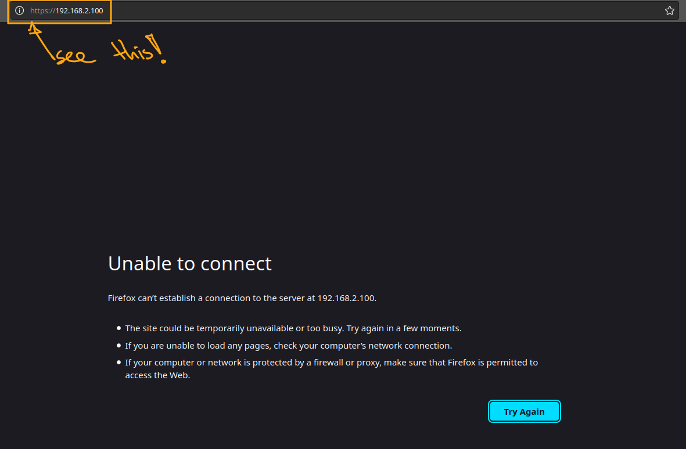
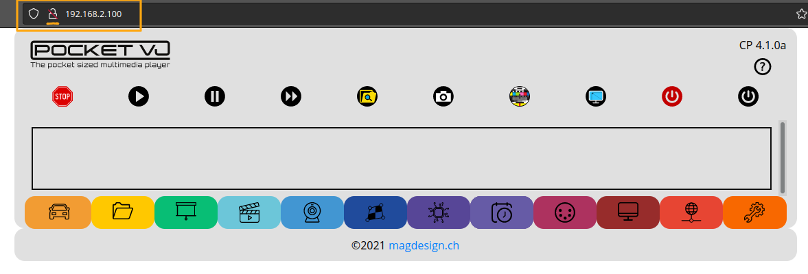
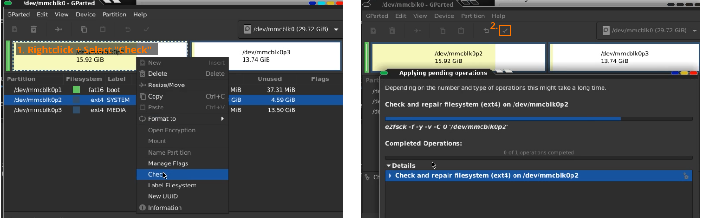
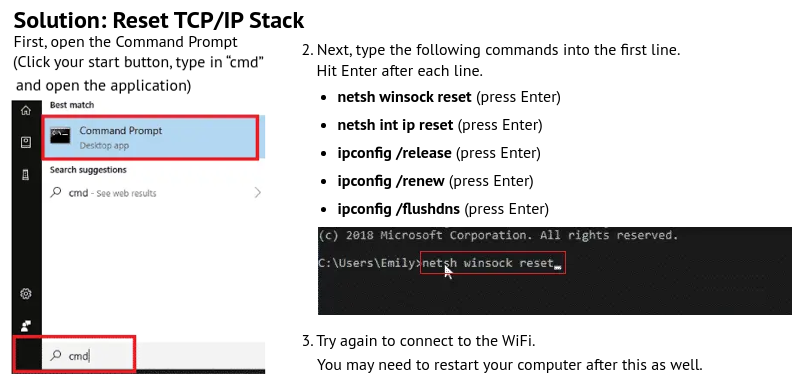
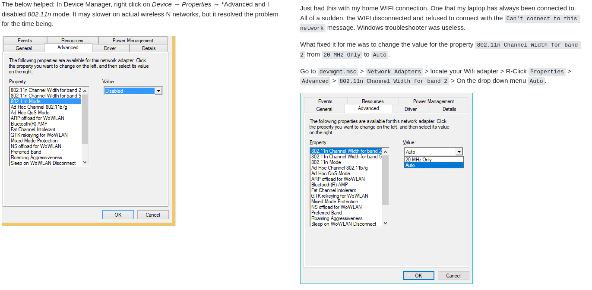

TROUBLESHOOTING¶
Get help online: https://github.com/magdesign/PocketVJ-CP-exh/issues
There will always be a solution :-)
I dont get an IP address from the PocketVJ¶
=> Be patient, try again.
If this does not help, read further in this section, it might get a bit complicated…
Note
Sometimes there are power peaks which can cause that the Wifi signal is not strong enough. Known are some issues with Hdmi to VGA adapters with old VGA devices who suck a lot of power. Also after plugging in some USB sticks. If there are many wireless devices in the room, change the wifi channel, since most units use channel 6 as standard.
Not able to connect CP via browser¶
Note
Some browsers force a https:// connection, which is not possible on PocketVJ and will cause trouble to not be able to connect.
If you try to connect the CP via webbrowser and get an error like this:
then all you have to do is to remove the https:// in the addressbar:
Not able to connect CP via browser (2)¶
There is an edge scenario when the PocketVJ looses power while playing DMX Sequences causing the webserver (lighttpd) not to run anymore. To fix this, access it with ssh and do following
sudo mkdir /var/log/lighttpd
sudo chown -R www-data:www-data /var/log/lighttpd/
sudo service lighttpd start
- To check if the webserver is now running without errors ::
sudo service lighttpd status
Not able to connect CP via browser and not getting any IP from wifi connection¶
In rare cases, when you poweroff or reboot the PocketVJ while there are still things playing (especially mapping sync or dmx shows), it gets a read/write error on the internal SD card. There is no other way to fix this than opening your PocketVJ, remove the sd card, boot a computer with Linux (if you have no Linux computer, download an Ubuntu live Image (https://ubuntu.com/download/desktop) and boot into this), insert the SD card, open the program called: “Gparted” and click Check & Repair filesystem. After done so, insert the SD card back into PocketVJ and it will run again. I know its much, but it might bring your device back to life.
Note
Do not try to fix the SD card with a Windows or OSX computer, this will completely break your system and you need to get warranty replacement card from me
Trouble connecting to Wifi Hotspot (vj100) with a Windows Computer¶
If your Windows10 does not allow to connect to the PocketVJ wifi (vj100), following steps might help:
or this one:
.
Movie plays, but stutters¶
=> Check if it is really a h.264 compressed movie. => Go to SYSTEM SETTINGS click Powersupply and check the message.
Movie is not playing¶
Make sure that there is no space or special character in the filename and it is not longer than 16 characters, my_video_file.mp4 not: my video file.mp4.
Make sure your video is converted with the h264 codec (this causes in most cases the error)
Make sure your video data is in the correct folder (/media/internal/video/).
Make sure your PocketVJ is not configured to ‘Slideshow’ mode.
Make sure audio output is set to HDMI/Jack if there is no external soundcard connected, otherwise it will search for the ALSA device and will not start.
USB-Stick does not work anymore on my computer => Plug it back into the PocketVJ and Click UNMOUNT in the control panel.
Make sure to always mount and unmount your USB devices!
Connected several PocketVJs over a router¶
Check the Gateway settings of your router, in original mode the PocketVJ runs in 192.168.2.1
Remote “Power On Projector” does not work¶
Login to projector, enable PJLink, disable all passwords
Under Service, enable DDDP and set the Crestron control IP to: 192.168.2.254
make sure the Projector has following network info:
IP: 192.168.2.254
Subnet: 255.255.255.0
Default Gateway: 192.168.2.1
DNS Server: 192.168.2.1
make sure the computer which is connected to the PocketVJ CP is not connected to second network, for example RJ45 in your local network and wifi to PocketVJ, if this is the case, unplug rj45 until it finds the projector, then you can plug it in again.
Get a list of standard passwords for projectors here: https://github.com/magdesign/PocketVJ-CP-v3/blob/master/projector_passwords.md
Some projectors have broken firmware and can not be remotely powered on, test with other hardware before blaming me (sometimes powering off works!)
Audio quality is Bad, Audio glitches or stutters¶
Make sure audio compression is not higher than 160kp/s
Make sure you enable only one output: e.g. audio jack or audio HDMI, not both!!
Special Functions¶
Nearly everything is possible ;)
Open an issue on github and your desired function it will be available on the next update ;)
If you are in a hurry, you might drop me a donation to get things coded fast…